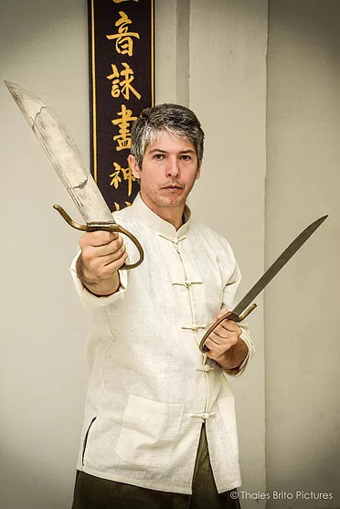

Pa Tzan Do
Por Thomas Pinheiro
Pa Tzan Do significa técnica de oito cortes, e é uma arma pertencente às 18 armas tradicionais do kung fu. Conhecida também sob o apelido de faca borboleta (wu tip do), normalmente é utilizada em par, porém também pode ser manejada com apenas uma peça, como combinando com o uso de outra arma, como por exemplo, o escudo chinês.
O desenho das facas borboletas chegam a possuir uma variação quanto ao comprimento de suas lâminas, mas normalmente seguem a medida do ante braço do praticante. A utilização desta arma no Wing Chun não possui uma história bem certa, mas acredita-se que Yin Wing Chun acresceu a técnicas já existentes da arma técnicas de braço de Wing Chun, pois nota-se claramente técnicas diferentes no manuseio, entre técnicas de Shaolin e as próprias do estilo Wing Chun.
Porém, para todo praticante, e principalmente na época em que se utilizava armas brancas para a própria defesa ou em guerras, quanto maior a possibilidade de variações, maior a possibilidade de uso da arma, não se restringindo à espaços ou situações determinadas. Isto significa que a arma é como o corpo, e deve ser totalmente explorada em todas as suas possibilidades.
Cuidados com o Treino:
Como toda arma, o Pa Tzan Do necessita ser de material forte, equilibrado, evitando assim o sobrecarregar de força no pulso, o que pode trazer sérias lesões. As técnicas da faca incluem cortes, estocadas, bloqueios semelhantes às técnicas de braço, socos com a faca, técnicas curtas de cotovelo. O ensino das facas no sistema Wing Chun, se dá normalmente como o último estágio, se o treino realmente for sério, é exigida muita força de pulso, e isto é adquirido através do treino de braço, e, posteriormente, de bastão.
Como as técnicas de faca seguem as técnicas de braço, há uma sequência lógica no aprendizado. Os ombros também acabam sendo exigidos, e quando o aluno não adquire um alto nível de relaxamento nos ombros, o ensino de arma se torna prejudicial. Outro motivo para se ensinar por último é a faca ter um significado muito forte em relação a combate, é uma arma, de corte, o que significa que sua intenção era para matar.
Na época em que se criou, a arma de fogo era rara ou inexistente, portanto armas de corte tinham um alto valor, eram letais, para usos extremos. O ensino ainda faz parte, pela tradição do estilo, além de fortalecer e reforçar alguma determinada habilidade técnica. O treino da arma se dá através de forma, treino com parceiro e a possibilidade também de utilizar-se algum mook jong com um desenho próprio para as técnicas de faca.
Sobre a Prática da Forma:
Da mesma maneira como com as técnicas de wing chun de corpo, a prática das armas, no caso o pa tzan do, também possui uma forma, uma sequencia de movimentos. No wing chun chamamos de forma dos oito cortes, e que não significam exatamente oito cortes mas oito técnicas de como cortar, bloquear, incluindo estocar.
A forma tradicional dos facões não altera a empunhadura, já que a ideia é responder o mais rápido possível; inevitavelmente muitos mestres acresceram movimentos, o que não é errado, pois o conhecimento dependendo de situação às vezes tee obriga a adaptações com a arma. Aliás, discutir sobre que forma é correta é algo sem fundamento pois se você compreender o uso da arma, a forma é feita para guardar movimentos e praticar continuidade, e lógico exercitar as técnicas, mas pode-se fazer isso isoladamente também, ou com equipamentos.
As formas praticadas pelas famílias de wing chun na atualidade foram muito modificadas, e por vários motivos: dar à forma mais velocidade e coordenação de pernas, faze-la ficar mais dinâmica... Possivelmente a forma original fosse praticamente estática o tempo todo com algumas explosões de andada. É impossivel dizer que esta ou aquela seja a original. O mais importante é que as técnicas originais estejam presentes na sequencia da forma, executadas de forma correta, seguindo príncipios do estilo e funcionabilidade real. A ordem dos fatores, não altera o produto da forma!
Como hoje em dia muitos praticantes copiam formas por video e outros meios de midia, o conceito do aprendizado da arma se torna um tanto banal, a importância em termos de valor cultural se perdem. Os valores de aprendizado real são mantidos, pois detalhes não podem ser pegos através de videos, é realmente necessário que alguém acompanhe e ensine com detalhes. Aprender é compreender, assimilar internamente, não decorar apenas.